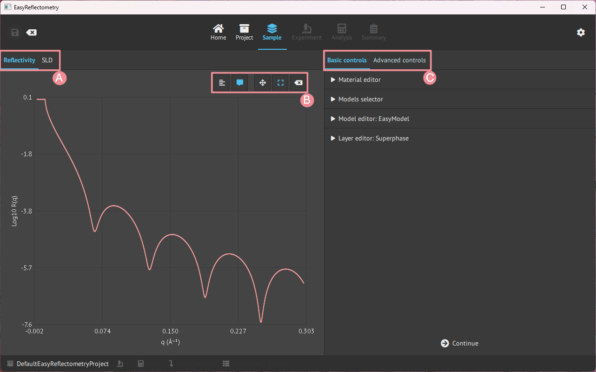
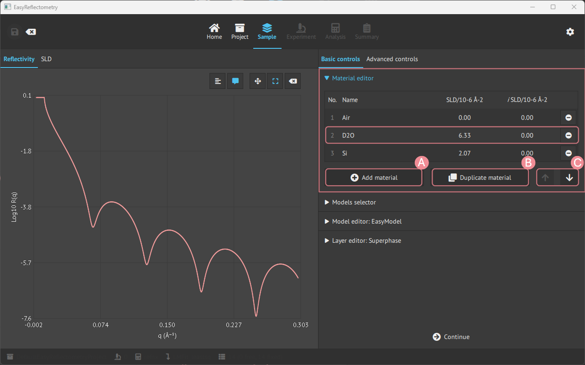
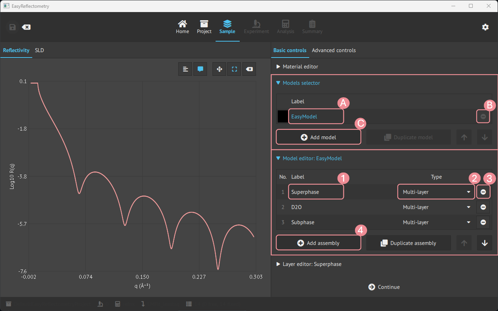
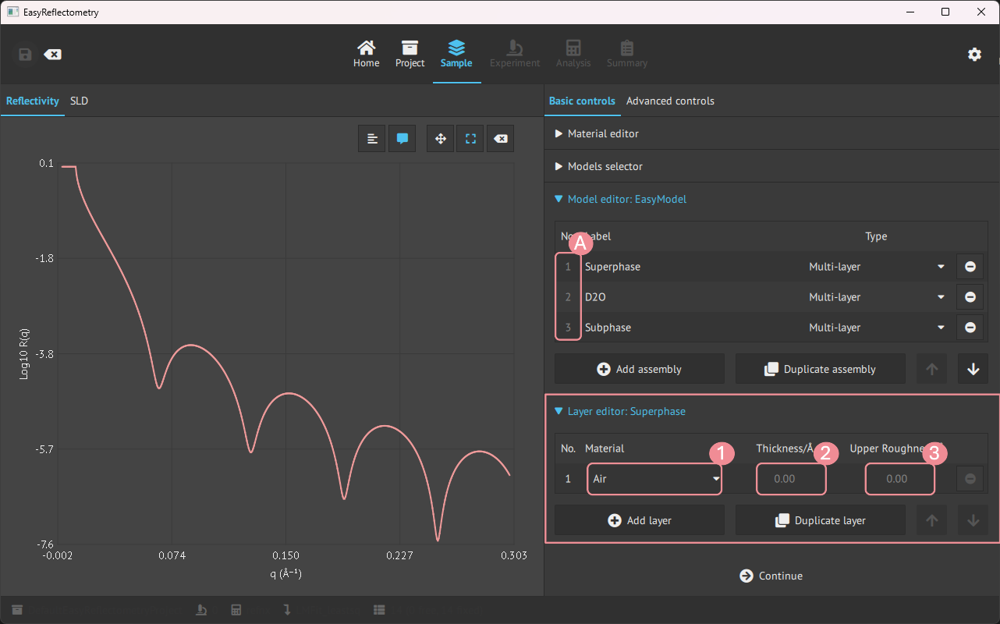
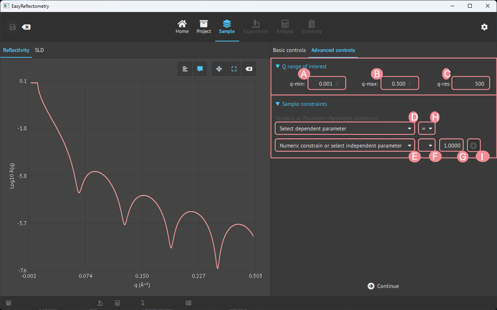

Material and model setup#
When a project is initialised it is then possible to define material and set the model.
Let us first look at the general layout of the Model page, which is split up into two parts, the main window showing the graphs and the sidebar being the control panel for variables and data.

A: Graph change between the Reflectivity- and Scattering Length Density (SLD) curve.
B: Graph control of ledger, visible coordinates on hower, zoom and pan control, and reset.
C: Basic controls, for defining material and model, and advanced controls for further setting parameters.
Basic controls#
Material editor#
To construct a model in the app, first, you add the materials that will compose the layers in Material Editor.
The materials are added by the real and imaginary components of the scattering length density (in units of 10-6Å-2) and given a name for the material.

A: For adding more material.
B: Duplicating the last clicked material.
C: Changes the ordering of materials.
Density materials#
A material can also be defined by its chemical formula and mass density instead of a
numeric SLD. Such density materials enter a project when a sample is loaded from an ORSO
model that defines a material this way (Load a sample), and they are marked with a ρ
badge next to their row number in the Material editor table.
Selecting a ρ row reveals a detail panel below the table with the material’s chemical formula, its mass density (in g/cm³) and the checkbox SLD computed from formula and density:
Checked (the default): the SLD is physics, not an input - it is computed as
SLD = Nᴀ · ρ · b / Mfrom the density ρ, the formula’s coherent neutron scattering length b and molecular weight M. The SLD/iSLD cells in the table are therefore read-only, and on theAnalysispage the material’ssld/isldparameters are shown greyed as dependent whiledensityis the parameter to fit. Editing the formula updates the scattering length and molecular weight (an invalid formula is rejected and the field snaps back).Unchecked:
sld/isldbecome ordinary independent parameters - editable here and fittable on theAnalysispage exactly like a plain material’s (they arrive fixed, so tick theirFitbox). Thedensityand scattering-length rows are greyed with the noteunused (SLD is fitted directly), because they no longer affect the reflectivity - they cannot be fitted or edited until the box is checked again.
The molecular weight never appears in the Analysis table: it is a constant of the
chemical formula (recomputed whenever the formula is edited), not a fittable parameter -
fitting it alongside density would be degenerate, since only their ratio enters the SLD.
Warning
Re-checking the box restores the coupling by recalculating SLD/iSLD from the current formula and density - manually entered or fitted SLD values are discarded.
The choice is per material and is saved with the project; projects saved before this
feature load with the coupling enabled. Note that toggling the coupling is not undoable.
If you add a constraint on sld/isld while unchecked and then re-check the box, that
constraint is silently discarded - re-checking always recomputes SLD/iSLD from the
formula and density. The Active Constraints table refreshes after a toggle, but it does
not flag rows that the toggle invalidated, so review it yourself after switching modes.
Model creation and editing#
For creating new models, the Models selector tab is used, and then for setting the assemblies in the model the Model editor is used.

A: Renaming model.
B: Removing the specific model.
C: Adding more models.
1: Renaming/naming the assembly.
2: Setting the type of assembly; Multilayer, Repeating Multilayer or Surfactant layer.
3: Removing the specific assembly.
4: Adding more asseblies.
Contrasts#
A contrast is the same sample measured under another scattering length density condition: the film in D2O and in H2O, or a monolayer with deuterated and with hydrogenated tails. Each contrast is a model of its own, with its own scale, background and resolution, while the structure is common to all of them. Fitted together, the contrasts determine what no single one of them can.
To create one, select the reference model in the Models selector and press
Add contrast of the selected model…. The dialog asks for the new model’s name and
lists what the contrast can change:
every material the model uses, with a drop-down to replace it by another material from the
Material editor(keepleaves it as it is). Add the replacement material, e.g.H2O, to theMaterial editorfirst. Replacing a material replaces it everywhere the model uses it: a water used both as the subphase and as the solvent of a hydrated head group changes in both places;every layer or density material defined by a chemical formula, with its formula to re-formulate it, e.g.
C32H64instead ofC32D64for hydrogenated tails. The material a surfactant layer builds from its formula is changed this way, not replaced.
Press OK: the new model is added and becomes the selected one, so select the reference again before adding the next contrast.
What the contrast does not change is shared with the reference:
an assembly that none of the replaced materials or formulas touch is one assembly in both models. It is marked ⇄ next to its number in the
Model editor(the tooltip names the other models), and editing it edits every model sharing it;an assembly that a replacement touches is copied, and every parameter of the copy follows the reference’s, except those of the replacement. A subphase in H2O keeps the roughness of the D2O one; a hydrated head group keeps the thickness, area per molecule and solvent fraction of the reference. Edit these in the reference model.
On the Analysis page a parameter shared by several models is listed once, marked
⇄, with the models in its tooltip. To let it differ in one contrast, select it and
use Detach in below the table: that model gets its own copy of the assembly, with
every other parameter still following the shared one.
Pair each experiment with its contrast in the Model column of the experiments table,
on the Experiment or the Analysis page. On the Analysis page, the Fit checkbox
of each experiment chooses which contrasts the next fit includes. Which model each contrast was derived from is saved with the project and
listed in the report.
Layer editor#
Then for editing the assemblies in the model, the Layer editor is used.
By clicking an assembly, the Layer editor is specified and changes can be made to that assembly.

A: Pick the desired assembly to modify.
1: Choose a material from materials in the
Material Editor.2+3: Setting the Thickness and Upper Roughness of the material in Angstrom, Å.
Magnetism#
A layer can also be given a magnetisation, in the Magnetism group below the layer editor.
This needs the refl1d calculation engine and is described in
magnetic layers.
Structure view#
The main window has a Structure tab next to Reflectivity showing a schematic of the current model’s layer stack: one colored box per layer, ambient medium on top, substrate at the bottom. Boxes share a color per material (see the legend), box heights follow layer thickness, and repeated multilayers with many repetitions are drawn once with a “× N” badge.
Hover a box for its material, SLD, thickness and roughness; click it to select that layer in the sidebar editor. The view updates immediately when the model changes, including after a fit.
Note the view is a schematic, not a to-scale cross-section: heights are clamped so very thin layers stay visible and very thick ones do not crowd out the rest.
Advanced controls#
In the advanced controls, it is possible to apply a specific Q-range of interest, to choose the calculation engine, and to constrain the parameters of the model.

A: Setting min. Q value of interest.
B: Setting max. Q value of interest.
C: Setting Q-resolution.
The Calculation engine group selects between refnx and refl1d for this project. The
same selector is available on the Analysis page. Only refl1d can model magnetic layers,
so selecting refnx while the sample has magnetic layers is refused - see
magnetic layers.
Below these sit three constraint groups, from the most specific to the most general:
Physics constraints, Single constraints and Link contrasts.
Physics constraints#
The Physics constraints group applies physically motivated constraints to an assembly with
one click. The list is per assembly of the current model, and only shows the recipes that
make sense for that assembly type; a recipe that cannot be applied right now is marked
n/a with the reason, and one that is always in force is marked always on.
Recipe |
Effect |
|---|---|
Conformal roughness |
Every interface of the assembly shares the roughness of its first layer. |
Conformal thickness |
Every layer of the assembly shares the thickness of its first layer. |
Constant period Λ |
The summed thickness of the layers stays constant: the last layer absorbs whatever the others change by. |
Equal head/tail area per molecule |
The head layer takes the area per molecule of the tail layer (surfactant layers). |
Symmetric head groups |
The back head layer follows the front head layer thickness and area per molecule (bilayers). |
Solvent roughness follows the surfactant |
The roughness of the first layer below the surfactant follows the tail roughness. Needs Conformal roughness. |
Mixture fractions sum to 1 |
Material mixtures and solvated materials keep their fractions normalised. Always on, not toggleable. |
Each active recipe appears as a single row in the Active Constraints table of the
Single constraints group, of type physics, counting the parameters it ties together.
Single constraints#
The Single constraints group creates numeric or symbolic relationships between individual
parameters.
Pick the dependent parameter from the drop-down.
Pick the relation:
=,≤or≥.Type the expression, for example
np.sqrt(1 / sld_ni) + 4. Use Insert parameter alias… to paste the alias of another parameter rather than typing it, and Insert total film thickness to use the read-only sum of all layer thicknesses between superphase and subphase.Check the Preview line, which shows how the constraint will read - and, for an inequality, that numeric literals are interpreted in the dependent parameter’s unit.
Press Add constraint.
= ties the parameter to the expression, so it is no longer free. ≤ and ≥ against other
parameters become inequality constraints, which are enforced as penalties during
fitting.
Warning
Inequality constraints need a BUMPS minimizer (Analysis › Minimization method). With
lmfit or DFO-LS selected the group shows a warning and fits are refused until the
minimizer is changed or the inequality is removed. A warning also appears when the current
parameter values violate an inequality, and again fits will not start until they hold.
Existing constraints are listed in the Active Constraints table, with columns No.,
Type, Parameter and Expression. The Type column tells the kinds apart - expr for a
plain equality, ≤ ≥ for an inequality, physics for a recipe from the group above,
bound for an upper bound and value for a fixed value - and each row can be removed
individually.
Link contrasts#
The Link contrasts group ties whole models together rather than single parameters. It
is for contrasts that already exist as separate models: built by hand, loaded from
separate files, or kept from a project saved before Add contrast existed. For a new
contrast, Add contrast of the selected model… (see Contrasts above) is simpler:
it shares the structure from the start.
Tick two or more models in the table. The ticked model highest in the list is the reference; the others follow it.
Leave Also tie material SLDs and densities unticked when the models are contrasts, i.e. differ in their materials. Ticked, it ties every material’s SLD, density and scattering lengths to the reference’s too, including the water that makes the contrast.
Press Link selected models. The line below the button reports how many parameters were tied, and lists any it could not tie, with the reason.
Parameters are matched by their position in the model, so linking needs the models to
have the same layout: the same assemblies with the same layers, and, layer by layer,
materials of the same kind (a density material and a plain-SLD material do not match).
Models that do not match are reported, e.g.
'Film in CMSi' and 'Film in D2O' differ in layout at sample/2/layers/0/material/density,
and nothing is tied. When several models are ticked, either all of them are linked or,
if one cannot be, none.
What linking ties, and what it leaves alone:
each model keeps its own scale and background;
thicknesses, roughnesses and the other structural parameters of corresponding layers are tied;
a material both models use is already one set of parameters and needs no tie. A material is shared only when both models’ layers use the same entry of the
Material editor. A model made with the duplicate button has its own copies of the materials, under the same names: to share the film SLD with the reference, pick its layers’ materials again in theLayer editor;a material that differs between the models (the water) keeps its own SLD, unless Also tie material SLDs and densities is ticked;
a parameter that already follows the reference’s is left as it is; one that follows any other parameter is not re-tied, and is listed.
Each tie is listed in the Model Constraints table below, and with the other constraints
in the Active Constraints table. Removing a row frees that parameter and restores the
value and bounds it had before the link. Links are saved with the project.
Trying the constraints out#
Four simulated datasets with a known ground truth are provided for exercising these features - see demo datasets.